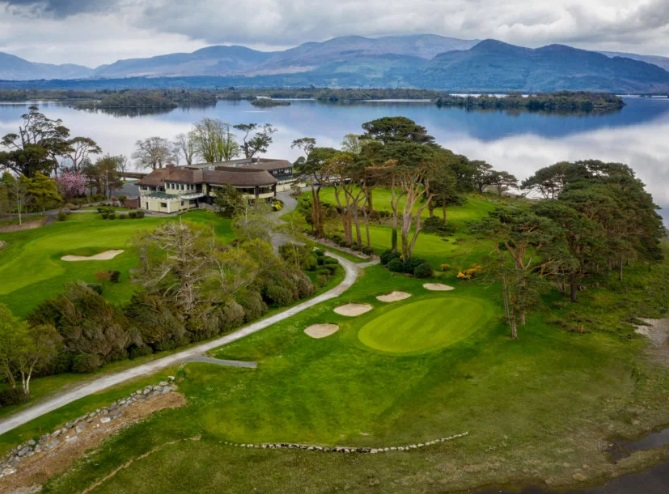

Royal Portrush, home of the 2019 Open Championship, has a unique place in the history of Irish golf. It is the only golf course outside Great Britain to host the Open Championship, and it has done it twice! First in 1951 and again this year in 2019. The Dunluce Links course is perched beautifully on the Atlantic Ocean and is a wonderful test of links golf. It was once famously described as a "spectacular monster". There are only 59 bunkers on the entire course, but plenty of other challenges await you as you navigate your way through this classic links adventure! This course is a must play for any Golf Trip taken in Northern Ireland!
The Portrush Atlantic Hotel is the perfect base camp for your Northern Ireland Golfing Links Adventure! Ideally located very near three of the top Links courses in all of Ireland and boasting spacious, comfortable guestrooms and friendly, courteous service are all part of the Portrush Atlantic guest experience. Hotel rooms are a welcome, relaxing retreat after a day of golf, with plush beds, flat-screen televisions and Wi-Fi access. Dine onsite at our Counties Cafe Restaurant & Bar, a popular meeting spot with both locals and guests. Plan your next Northern Ireland Golf Trip in this beautiful hotel with a central location perfect for also exploring local attractions including the historic Old Bushmills Distillery and the legendary basalt formations Giant's Causeway.
Suggested hotel: Portrush Atlantic Hotel